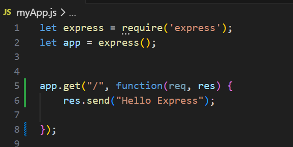

Node and Express
install and manage packages from npm, which are collections of smaller modules
Express: Express makes it much easier to create a server and handle routing for your application, which handles things like directing people to the correct page when they visit a certain endpoint like /blog
Running the File on server;
npm run <cmd> will goto package.json and look for what to run?
Replace cmd with start make sure that in pacakge.json you have a key as start and value should be :"node mainFile.js"
Hence now you can run using: npm run start
OR you can create automatic watch whenever the file is saved, it would automatically restart the server.
this can be done by navigating to package.json and in start make sure that when you are adding "node --watch mainFile.js" this will make sure that whenever the file is saved, it restarts the server.
app.listen(port). It tells your server to listen on a given port, putting it in running state.
In Express, routes takes the following structure: app.METHOD(PATH, HANDLER) METHOD is an http method in lowercase. PATH is a relative path on the server (it can be a string, or even a regular expression). HANDLER is a function that Express calls when the route is matched. Handlers take the form function(req, res) {...},where req is the request object, and res is the response object.
function(req, res) { res.send('Response String'); }
will serve the string 'Response String'.
app.get() is used to serve the string

res.sendFile(path) can be used to serve an HTML or some other file whenever an endpoint is hit.
NOTE it requires absolute filepath
__dirname?
Dirname is used as node global variable which is used to calculate the absolute filepath for the files. If we use Dirname, it taks the path of the directory adn then after that we can add the relative filepath.
express.static(path)
This can be used as a static path for you files like stylesheet, images, or other site assets.
note this also requires path in absolute filepath.
Using, express.static so serve CSS.

Building first API
To do that we will create a get route, on /json. Making sure that when it is called we display some json.
Serving response as JSON we use res.json(params)
@params: We can give key value pair of the information we want to display.

OUTPUT:

.env
.env file is a hidden file that can contain our secrets.it can pass env. variables to your application.
access environment variables:
process.env.variable_name
By Convention variable name shoudl be all Caps seperated with underscores. We don't need to give key value pairs in string. it can be like
eg:
Password=Neeraj123@
NOTE: You see there are no space around Equals, it is mandatory to not have spaces around equals (=).